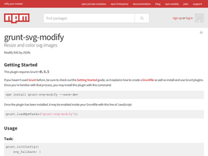

Awesome SVG
Accessibility
Animation
Basics
Books
Downloads
Experiments
Filters
Follow twitter
Fragments
Gradients
Grunt plugins
Gulp plugins
Icons
Libraries
Masks clips
Optimization
Patterns
Responsive
Sites using-svg
Slides
Snippets
Softwares
Text
Videos
groups
Grunt Plugins
Grunt-svgmin
Grunt-svg-compactor
Grunt-webfont
Svg fallback
Grunt-svg2png
Grunt-svg-sprite
Grunt-svgstore
Grunt-iconizr
Grunt-svgtemplater
Grunt-svg-modify
Grunt-contrib-imagemin
Grunt-dr-svg-sprites